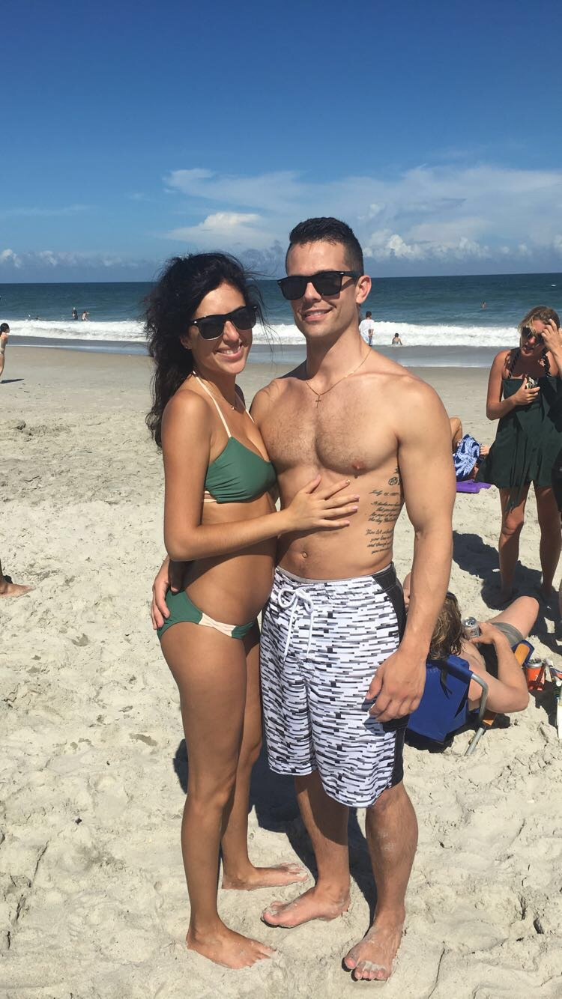

Corina
I wrote you this poem.. I dont pretend to be a poet by a long shot and it's a little corny but I hope it can make you smile....
In writing this I didn't know where to start,
I guess it's best to just speak from the heart.
Accepting the reality of loosing you,
by far the hardest thing I've ever had to do.
The love I have for you is something that can't be measured,
Waking up next to you is a though that's forever treasured.
The memories in my head in something I cannot ditch
Like the weekend at the beach when Meredith was acting like a ...
They say it takes loosing something to know what you had,
Just thinking about that makes me incredibly sad.
I know you've said over and over you need time and space,
But the thought of us together is something god himself cant replace.
I'd do anything to be able to to go back in time and make things right,
Anything to avoid what happened that night, avoid that awful fight.
I didn't truly know what the word love meant until we met,
Just a simple day at a backyard party that I'll never forget.
Your fear that things will just be more of the same,
All of the terrible things that I did to drive you insane.
Sleeping too much, not talking to you and being lazy;
I understand exactly what I did to drive you away, drive you crazy
I could make more promises of me changing but you know its only words,
My actions will become the reality and not sentences you've already heard.
You've heard me say that I wish it didn't take loosing you;
Just to understand how much personal work that I had to do.
I'd do anything to again have you by my side,
For a chance to change of the things that made you stay up late and cry.
You deserve to have a happy, wonderful life;
You deserve to feel the love a husband has for his wife.
From the smell of your hair as you lay next to me,
To the constant love that you show my best friend, Remy.
I could go on for days listing the reasons I fell in love,
I know now that you were a gift from the man up above.
You said that you came into my life at the worst time and maybe its true,
I don't want to even think about where I'd be if it weren't for you.
It's my turn to be there for you in any of times of need,
I promise to always do my best, even if I do not succeed.
I realize that I am asking you for a lot,
But the reality is; this Love isnt something thats going to stop.
I love everything about you from head to toe,
Especially your crazy hair that can quickly turn into an afro.
Your beautiful face, amazing smile and tiny little accent,
When god created you it definitely an accident.
I can't stop fighting even though times are rough,
I love you Corina and I'm not going to give up.